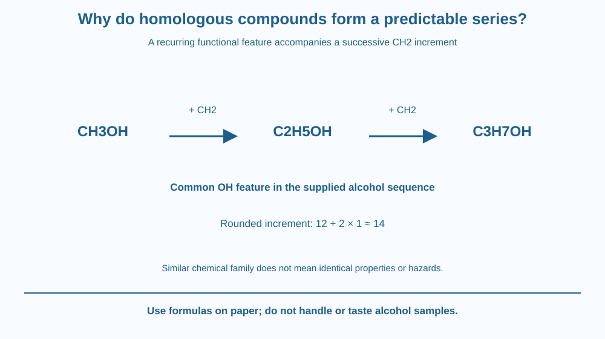

Recognise a homologous series using a common functional feature and a repeating CH2 increment. Predict a neighbouring formula and distinguish similar chemical behaviour from identical physical properties. Use alcohol formulas on paper without handling or tasting any chemical.
Methanol, ethanol and a propanol formula look related, yet they are not the same substance. Their formulas follow a useful pattern: each successive member in this simple sequence contains one additional carbon and two additional hydrogens.
Why group them? Their shared OH functional feature supports similarities in chemistry, while changing chain size can alter physical behaviour. A series organises compounds without pretending they are interchangeable.
The useful question is which structural part stays comparable and which part grows from one member to the next.
A homologous series is a family of related organic compounds with a common general pattern and similar functional features. Successive members in the usual straight-chain sequence differ by a CH2 group.
For a simple alcohol example, write CH3OH, C2H5OH and C3H7OH. The OH group remains represented, while the hydrocarbon portion increases. Counting the complete atoms gives CH4O, C2H6O and C3H8O.
The increment CH2 has an approximate relative mass contribution of 14 using rounded carbon 12 and hydrogen 1 values. This gives a useful regular mass step in the simple sequence. It is a formula calculation, not a measurement of every commercial liquid labelled alcohol.
The functional group helps organise characteristic reactions. The carbon skeleton also influences behaviour, so similar does not mean identical under every condition. A family label is a guide to relationships, not a replacement for the actual structure.
Physical properties can vary along a series. For suitable comparable members, boiling behaviour often changes with chain size and intermolecular interactions. It is too strong to say every property changes in a perfectly monotonic way across all isomers and conditions.
A general formula must be used within its intended family. The same molecular formula can sometimes correspond to different structural arrangements, a separate topic addressed later. Formula matching alone does not prove that a compound has the required functional group.
The alcohol examples also have different practical hazards and uses. A shared OH group does not make substances safe to drink or suitable substitutes. No real chemical handling is part of this lesson.
The focus differs from the earlier explanation of carbon's ability to form many compounds. That topic explained bonding diversity. Here the target is a classification pattern that supports formula prediction while preserving differences between related substances.
Draw a fixed coloured OH tag attached to carbon-chain blocks. Add one carbon and two hydrogens between successive formula cards while keeping the functional tag visible.
Count the full atom totals separately from the shortened formula notation. This prevents the OH hydrogen from being forgotten when comparing CH3OH with a full molecular formula.
Then put a different structural arrangement beside a matching atom-total card and mark it needs checking. The model shows why a series needs a structural relationship, not merely an arithmetic coincidence in a list of formulas.
The SVG shows the three alcohol formula cards with CH2 arrows between them. The common OH feature is identified separately from the growing carbon portion.
A mass-increment panel calculates about 14 from the rounded elemental contributions. A lower comparison states similar chemistry but potentially different physical properties and hazards.
The diagram contains no bottle-opening, solvent use or flame test. It is a classification and formula-accounting model, not a recipe or a claim that all compounds called alcohol can be used interchangeably.

Organic naming and product descriptions can contain related family terms. Understanding a series helps students see why the names are connected while still requiring the full identity for a practical decision.
An Indian chemistry classroom may use formula cards to predict the next member safely. The paper exercise gives the core relationship without bringing toxic or flammable samples into a home activity.
Everyday uses of the word alcohol can be vague. This lesson deliberately uses chemical names and formulas, and it never treats family membership as a safety assessment or permission to taste a substance.
Use paper and two colours.
Use the supplied sequence rather than an unknown household product. Do not open, smell, mix or taste any alcohol. The model predicts a formula relationship; it does not measure boiling point, establish purity or identify every possible isomer.
Why is a shared functional feature useful for grouping compounds even when their physical properties differ? Separate recurring reaction-related structure from complete identity.
Now suppose a formula list differs by CH2 but no structural information is supplied. What would you check before confidently assigning a homologous series? A numerical increment is helpful evidence, not permission to ignore functional arrangement.
What is the usual successive formula increment in this simple series?
Answer: A — Each neighbouring member adds one carbon and two hydrogens in the supplied sequence.
Why is the common functional feature important?
Answer: B — The shared feature supports family relationships without making members the same substance.
After C2H5OH, which supplied simple alcohol-series formula comes next?
Answer: C — Adding CH2 preserves the OH feature and gives the next simple formula.
Create a family chart with formulas, complete atom counts, common functional feature and CH2 steps. Include the approximate mass increment using the stated rounded atomic values.
Add two limits: related members are not identical, and formula totals alone may not establish structure. Your chart should predict a neighbour while remaining a safe paper exercise rather than a comparison of real chemical samples.
A repeating difference can organise a very large family without making every member the same. The stable part of the pattern supports prediction, while the changing part produces new properties. Classification is useful because it preserves both continuity and difference rather than erasing one of them.
A homologous series combines a recurring functional pattern with successive CH2 increments; related formulas support prediction but do not make all properties or hazards identical.